Labour, Birth & After
From threatened preterm labour to the six-week visit: preterm labour and PPROM, the small fetus, bleeding after 20 weeks, normal labour and the fetal heart tracing, stalled labour and operative birth, postpartum hemorrhage and shock, the newborn, and postpartum care with breastfeeding. Warm up with 24 questions to find your weak spots, work through the eight topics (the step bar marks the ones you missed), then finish with a 48-question final. Every answer links back to the lecture it came from.
Warm-up quiz
Cold, no notes. It's a diagnostic, not a grade: your score per topic lands on the step bar and tells you where to spend the day.
Preterm Labour & PPROM
Who's at risk, how to tell threatened from true preterm labour, the four tools and their cut-offs, and what to do when the waters break early.
- Term starts at 37+0. Threatened preterm labour = symptoms, cervix may or may not change. Preterm labour = contractions plus cervical change. One exam can't tell them apart without a baseline: re-examine.
- Biggest risk factor: a previous spontaneous preterm birth. Also multiples, a short cervix, cone biopsy (more than LEEP), cervicitis or BV, smoking, both age extremes. Most cases are idiopathic.
- Hydrate and check the urine first. Dehydration and UTI are common causes of an irritable uterus.
- Four tools: tocolysis buys 48 h (indomethacin < 32 wk, nifedipine > 32) · betamethasone < 34 wk · MgSO4 < 34 wk once birth is imminent · penicillin if GBS is positive or unknown.
- PPROM (waters break before 37 wk): confirm with pooling, nitrazine, ferning. Give steroids + latency antibiotics. Deliver instead for chorioamnionitis, abruption or fetal distress.
Four terms that sound alike
| Term | Means |
|---|---|
| Term | 37+0 and later; 36+6 is preterm |
| Threatened preterm labour | Labour symptoms before 37 wk; cervix may or may not change |
| Preterm labour | Regular contractions with cervical change before 37 wk |
| Preterm birth | Delivery before 37 wk, spontaneous or induced |
| PPROM | Membranes rupture before 37 wk, before labour starts |

The approach in triage
How often and how long are the contractions? Bleeding (abruption)? Leaking fluid (PPROM)? Infection? Prior preterm births, cervical surgery, smoking, progesterone?
Leopold's for presentation, the fetal heart, the cervix. A single cervical exam has no baseline.
Speculum tests and an ultrasound if the membranes may have ruptured.
Tocolysis if rehydration fails, to buy up to 48 h for the steroids or a transfer.
Imminent = cervix past about 4 cm, or a caesarean is needed. Penicillin if GBS is positive or unknown.
Why it happens, who's at risk, why it matters
| Group | Risk factors |
|---|---|
| History | Previous spontaneous preterm birth: first on the list |
| This pregnancy | Multiples, IVF, no prenatal care, a short cervix on ultrasound |
| Infection | Cervicitis (gonorrhea, chlamydia), BV, trichomoniasis, Ureaplasma, Mycoplasma |
| Cervix, uterus | Cone biopsy > LEEP; Müllerian anomalies, fibroids |
| Mother | Age < 20 or > 35; poorly controlled chronic disease; connective tissue disease (cervical insufficiency); smoking, substances |
| Cause | Example |
|---|---|
| Early HPA-axis activation | Maternal stress, some fetal anomalies |
| Inflammation, infection | Chorioamnionitis; UTI, especially pyelonephritis |
| Decidual hemorrhage | Placental abruption |
| Uterine distension | Twins, polyhydramnios |
| Idiopathic | The majority |
Prematurity hurts every system, worse the earlier the birth: lungs most of all (RDS, apnea, BPD), brain (IVH, later cerebral palsy), gut (NEC), hypoglycemia, retinopathy, sepsis, and long NICU stays.
The four tools
| Tool | Why | When |
|---|---|---|
| Tocolysis | Delays birth up to 48 h: time to transfer or give steroids | Indomethacin < 32 wk · nifedipine > 32 wk · terbutaline third-line. Only if rehydration fails. |
| Betamethasone | Type II pneumocytes make surfactant: less RDS, IVH, NEC and perinatal death | Before 34 wk, birth within a week likely. 2 doses 24 h apart. |
| Magnesium sulfate | Fetal neuroprotection: less cerebral palsy | Before 34 wk and birth imminent; running at the time of birth |
| Penicillin | GBS prophylaxis; prematurity raises the risk of GBS sepsis | GBS positive, or unknown and preterm; ideally ≥ 4 h before birth. A negative swab on admission makes it unnecessary. |
| The gestational-age cut-offs | Cut-off |
|---|---|
| Preterm vs term | 37+0 |
| Antenatal corticosteroids | before 34 |
| Magnesium sulfate (and birth imminent) | before 34 |
| Indomethacin vs nifedipine | 32 |
| PPROM counselling: half deliver within 48 h, three-quarters within a week | before 32 |
| Cerclage for a shortening cervix | before 24 |
PPROM: the waters break early
| Confirm it | Positive result |
|---|---|
| Pooling on speculum | Fluid collects in the vaginal vault |
| Nitrazine | Paper turns blue: amniotic fluid is less acidic than the vagina |
| Ferning | Dried fluid forms a fern pattern under the microscope |
| Ultrasound | Fluid low, not zero: it is fetal urine, and the baby keeps making it |
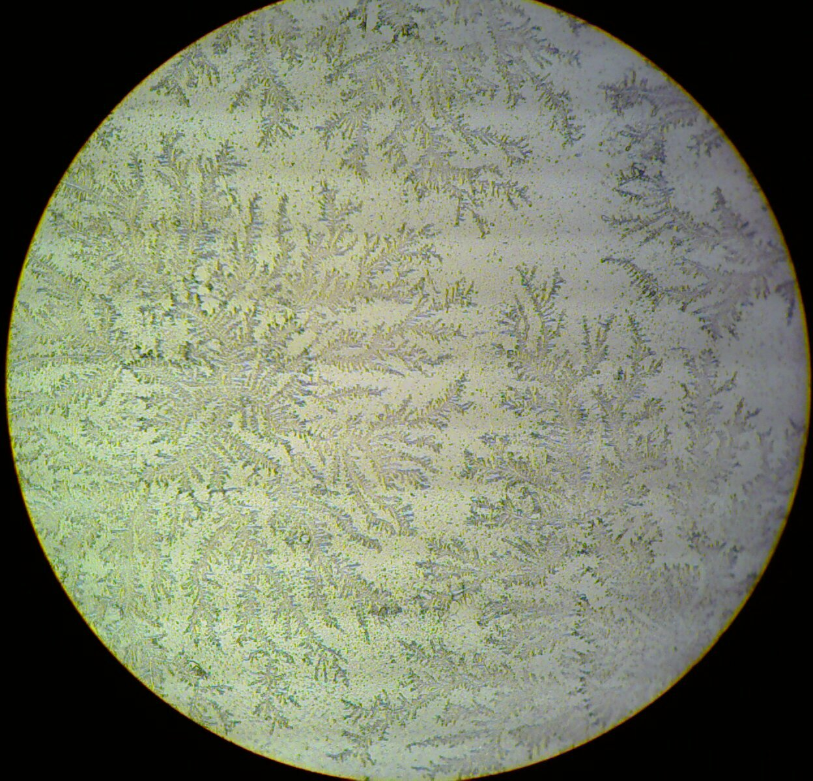
| PPROM carries |
|---|
| A high risk of preterm birth |
| Chorioamnionitis: most PPROM is thought to start with infection |
| Abruption, from the sudden decompression |
| Cord prolapse if nothing plugs the cervix (breech, transverse): deliver now |
| A longer NICU stay than intact membranes at the same age |
| PPROM at 28 wk: not contracting, afebrile, normal FHR | |
|---|---|
| Give | Steroids + latency antibiotics (prolong the pregnancy; IV for 2 days, then oral for 5) |
| Not yet | Magnesium (only when birth is imminent) · penicillin for GBS (at delivery) · indomethacin (she isn't contracting) |
| Never | Cerclage: for cervical insufficiency, never after rupture |
| Deliver instead | Chorioamnionitis, abruption or fetal distress |
The Small Fetus
Percentiles vs weight categories, SGA vs IUGR, how a small fetus is found and worked up, reading the umbilical artery Doppler, and when to deliver.
- Normal EFW = 10th–90th percentile. Below the 10th is SGA, above the 90th LGA. Real risk starts below the 3rd.
- SGA is not IUGR. SGA is a percentile, usually a constitutionally small, healthy baby. IUGR is a pathological failure to reach growth potential, and it can happen above the 10th.
- Screen with the fundal height (cm ≈ weeks after 20; > 2–3 cm behind → ultrasound). Only ultrasound confirms. Risk factors add growth scans at 26–28 and 34–36 wk.
- Causes are maternal, fetal or placental; placental insufficiency is where most end up. Hypothyroidism usually doesn't cause it; hyperthyroidism can.
- UA Doppler: rising resistance → absent → reversed end-diastolic flow. No catch-up in utero: delivery is the only cure. ≥ 37 wk deliver; 32–37 deliver for oligohydramnios or abnormal Dopplers; < 32 only for fetal distress.
Percentiles vs weight categories
| EFW percentile | Label |
|---|---|
| > 90th | LGA |
| 10th–90th | Normal |
| < 10th | SGA: smaller than expected, usually healthy |
| < 3rd | Where the risk of a bad outcome becomes real |
| Birth weight (any gestation) | Category |
|---|---|
| < 2500 g | Low: struggles to keep warm, breathe, hold sugar |
| < 1500 g | Very low: usually intensive care |
| < 1000 g | Extremely low: intubation, IV or NG feeds |
SGA vs IUGR
| SGA | IUGR | |
|---|---|---|
| What | Growth below expected norms | A pathological process impairing growth potential |
| Usual cause | Constitutionally small (petite parents) | Maternal, fetal or placental disease |
| Percentile | < 10th by definition | Usually < 10th, but can be above it |
| The baby | Healthy, on its own curve | At risk: needs surveillance |
Finding it and working it up
| Tool | Role |
|---|---|
| Symphysis–fundal height | The common screen. After 20 wk, cm ≈ weeks; > 2–3 cm behind → ultrasound. Imprecise. |
| Ultrasound EFW | The only way to confirm (HC, AC, BPD, FL) |
| Risk-based scans | How most IUGR is found: extra growth scans at 26–28 and 34–36 wk, more often once suspected |
| Question | Answer it with |
|---|---|
| Who is at risk? | Medical and obstetric history (earlier babies' sizes) |
| Chromosomal? | Review the first-trimester screen and NIPT; offer amniocentesis |
| Infection? | Toxoplasmosis and CMV serology (IgG and IgM) |
| How is the fetus coping? | UA Doppler · amniotic fluid · NST |
| Maternal | Fetal | Placental |
|---|---|---|
| Hypertension, CKD, lupus, smoking, substances, a previous IUGR baby | Trisomy 21, 18, 13; single-gene disorders; CMV, toxoplasmosis; multiples | Abruption; poor implantation; a chromosomal abnormality confined to the placenta |
| Intrinsic = the fetal tissue itself (trisomy 21: less cell division, less mass). Extrinsic = too little nutrient delivery (damaged placental vessels, an abruption, twins sharing). Most roads lead to placental insufficiency. | ||
Reading the umbilical artery Doppler
 Stage 1, rising resistance: end-diastolic flow sinks toward the baseline; the resistance indices rise (abnormal above the 95th percentile). Slide from the lecture.
Stage 1, rising resistance: end-diastolic flow sinks toward the baseline; the resistance indices rise (abnormal above the 95th percentile). Slide from the lecture.
 Stages 2 and 3: absent EDF (flow stops at the end of each beat), then reversed EDF (blood pushed back out of the placenta). The risk of fetal death now rises sharply. Slide from the lecture.
Stages 2 and 3: absent EDF (flow stops at the end of each beat), then reversed EDF (blood pushed back out of the placenta). The risk of fetal death now rises sharply. Slide from the lecture.
| Waveform | Placental vessels lost |
|---|---|
| Raised RI / PI | Damage beginning |
| Absent EDF | About half |
| Reversed EDF | About 70% |
When to deliver
| If it has to be preterm | Why |
|---|---|
| Steroids | Lung maturation (as in 6.1) |
| Transfer to a level II or III centre | A severely growth-restricted baby needs NICU support |
| Mode by the usual indications | Caesarean is more likely with oligohydramnios or abnormal Dopplers: the placenta may not tolerate contractions |
Bleeding After 20 Weeks
Abruption, previa and vasa previa side by side, the accreta spectrum, a work-up that never starts with a finger in the cervix, and when to deliver.
- Assess mother (ABCs) and fetus (NST) together, and always ask whether this is labour (show).
- Abruption = painful: tender, firm uterus, unrelenting contractions, maternal blood. A diagnosis of exclusion (ultrasound often normal). Concealed = severe pain, no visible blood, more fetal distress.
- Previa = painless. No digital cervical exam until ultrasound shows the placenta is clear. Complete previa → caesarean. Previa + a previous caesarean → accreta spectrum.
- Vasa previa = fetal blood. Bare fetal vessels over or within 2 cm of the os. A small bleed at membrane rupture → rapid fetal distress. Apt test.
- Stat bloods: CBC, INR/PTT/fibrinogen, creatinine, LFTs, group & screen. > 35–36 wk with active bleeding: deliver. Ongoing bleeding → consumptive coagulopathy.
The three placental causes side by side
| Abruption | Previa | Vasa previa | |
|---|---|---|---|
| What | Placenta separates early | Placenta over or just beside the os | Bare fetal vessels over or < 2 cm from the os |
| Blood | Maternal | Maternal | Fetal |
| Pain | Painful, contractions don't let up | Painless | Painless; often at membrane rupture |
| Uterus | Tender, maybe rigid | Soft, non-tender | Non-tender |
| Fetus | Stable at first; distress if large or concealed | Stable unless mom is unstable | Rapid distress, even from a small bleed |
| Diagnosis | Exclusion: ultrasound may be normal | Ultrasound (18–20 wk scan) | Ultrasound with Doppler; Apt test |
| Trap | Concealed: pain, no blood | A digital exam can cause a massive bleed | Mistaken for show |
Placental abruption
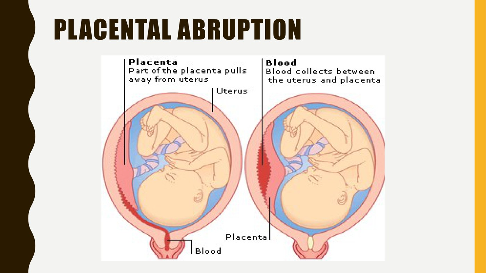
Revealed (left): starts at the edge, blood tracks out of the cervix. Concealed (right): blood trapped behind the placenta, no visible bleeding, severe pain, more fetal distress. Slide from the lecture.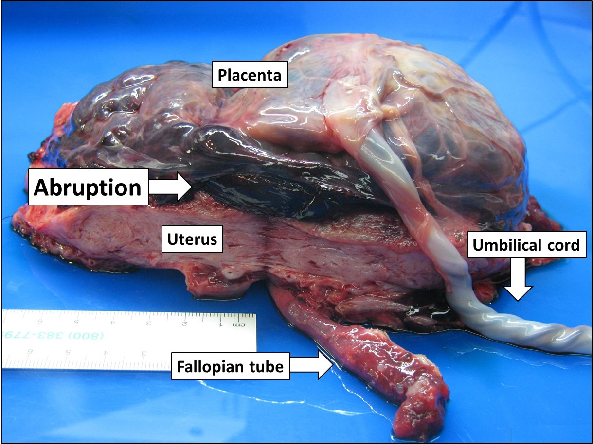
What it looks like: a dark clot splitting the placenta off the uterine wall. Mikael Häggström, CC0, via Commons.| Abruption risk factors |
|---|
| Hypertension (check LFTs: preeclampsia?) |
| Trauma: car crash, fall |
| Previous abruption |
| PPROM; intrauterine infection |
| Smoking, cocaine; autoimmune disease |
Placenta previa and the accreta spectrum
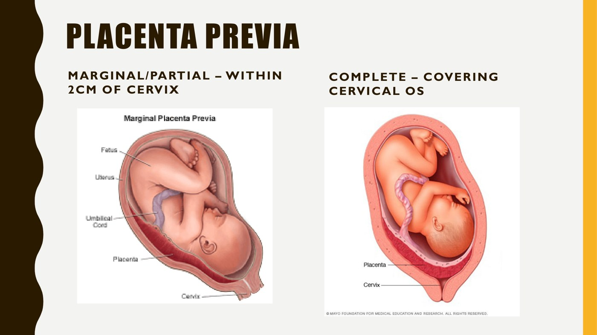
| Previa | |
|---|---|
| Found | 18–20 wk scan. Most early previas “move” (the lower segment stretches); few remain at term. |
| Sentinel bleed | Around 26–28 wk: short, stops on its own; many bleed again |
| Main danger | Sudden severe hemorrhage → shock and a fast consumptive coagulopathy |
| Delivery | Complete → caesarean |
| Anterior | Same bleeding risk, but the caesarean cuts through the placenta |
| After | More PPH and hysterectomy (little muscle in the lower segment) |
| Accreta spectrum | Placenta invades |
|---|---|
| Accreta | Onto the myometrium |
| Increta | Deep into the myometrium |
| Percreta | Through the wall, to bladder or beyond |
| Classic set-up: previa + a previous caesarean (the old scar isn't fully covered by endometrium). Invaded muscle can't contract and the placenta won't separate: almost all need a hysterectomy. | |
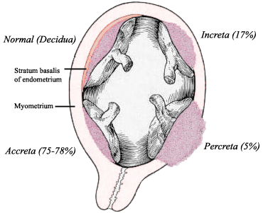
Vasa previa
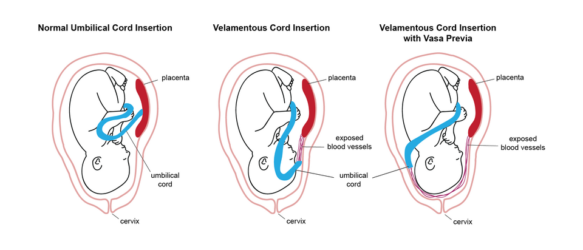
Normal insertion → velamentous (bare vessels in the membranes) → the same vessels over the cervix: vasa previa. Cchu9279, CC BY-SA 4.0, via Commons.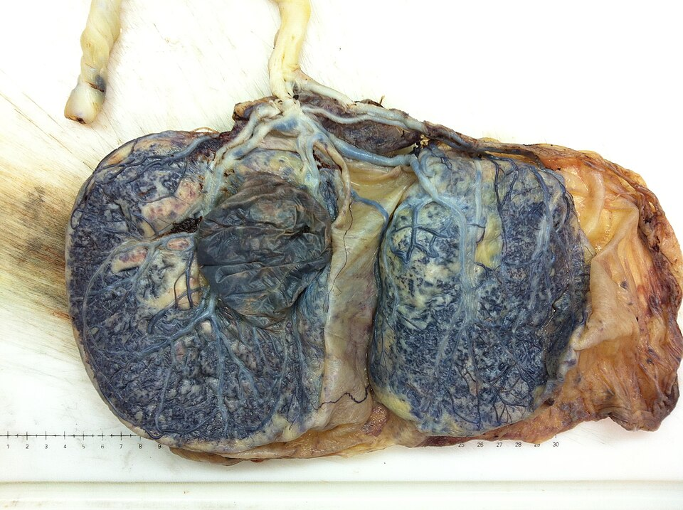
A two-lobed placenta with a velamentous cord: fetal vessels cross bare membrane between the lobes. If they lie over the cervix, that's vasa previa. Ed Uthman, CC BY 2.0, via Commons.| Type | Exposed vessels come from |
|---|---|
| 1 | A velamentous cord insertion |
| 2 | A succenturiate lobe or multilobed placenta |
Work-up and where she goes
| Stat test | Why |
|---|---|
| CBC | Baseline Hb and platelets |
| INR, PTT, fibrinogen | Is DIC developing? |
| Creatinine | Kidneys, if severe or unstable |
| LFTs | Preeclampsia (a cause of abruption) |
| Group & screen | Transfusion |
| Is it fetal blood? | Looks for | Use |
|---|---|---|
| Kleihauer–Betke | Fetal cells in the mother's blood | Trauma |
| Apt | Fetal Hb in the vaginal blood | Fetal distress, stable mother; known vasa previa or velamentous cord |
| Situation | Plan |
|---|---|
| Term or late preterm (> 35–36 wk), active bleeding | Deliver, even if both are stable. Induction if reassuring; caesarean for a complete previa or if either isn't reassuring. |
| Preterm, active bleeding | Birthing unit, continuous monitoring; steroids ± MgSO4; NICU / tertiary consult if very preterm; bloods every 4–6 h |
| Preterm, stable, bleeding settled | Antenatal ward: NSTs, growth scan, serial bloods. A big bleed at 32 wk isn't an automatic delivery; even 48 h lets steroids work. |
| Complications of previa | |
|---|---|
| Yes | Hemorrhagic shock · DIC · preterm birth · caesarean · transfusion · hysterectomy |
| No | Fetal hemorrhage (the blood is maternal) · preeclampsia |
Normal Labour & Birth
Who can labour, the four stages, reading the fetal heart tracing and resuscitating in utero, the vaginal exam, the cardinal movements, the third stage and perineal tears.
- Labour = regular contractions + progressive cervical change. Braxton Hicks (from ~28 wk) don't change the cervix.
- Stages: 1st onset → full dilatation (latent 0–4, active 4–10 cm) · 2nd → baby (tracked by station) · 3rd → placenta (2–30 min; after 30 = retained) · 4th = the first hour.
- FHR: intermittent (q15 min stage 1, q5 min stage 2) if low risk; continuous for high risk, oxytocin, VBAC. Normal = baseline 110–160, variability 6–25, accelerations. Early = head, variable = cord, late = placenta.
- Intrauterine resuscitation: scalp clip, vaginal exam (cord prolapse?), left side, oxytocin off, O2, ~500 mL bolus; then plan delivery.
- Cardinal movements: Engagement, Descent, Flexion, Internal rotation, Extension, External rotation, Expulsion.
- Active third stage: uterotonic + gentle cord traction + fundal massage. First sign of separation: the uterus turns firm and globular.
Who shouldn't labour (or be induced)
| Contraindication | Why |
|---|---|
| Placenta previa, vasa previa, cord presentation | Something other than the baby is in the way |
| Transverse lie | Can't come out vaginally |
| Prior classical caesarean, or surgery entering the cavity | Uterine rupture |
| Active genital herpes | Transmission at vaginal birth |
The four stages
| Stage | From → to | Primip / multip |
|---|---|---|
| 1st | Onset → full dilatation. Latent 0–4 cm, active 4–10 cm | 6–18 h / 2–10 h |
| 2nd | Full dilatation → baby. Tracked by station | 30 min–3 h / 5–30 min |
| 3rd | Baby → placenta | 2–30 min |
| 4th | The first hour after birth | — |
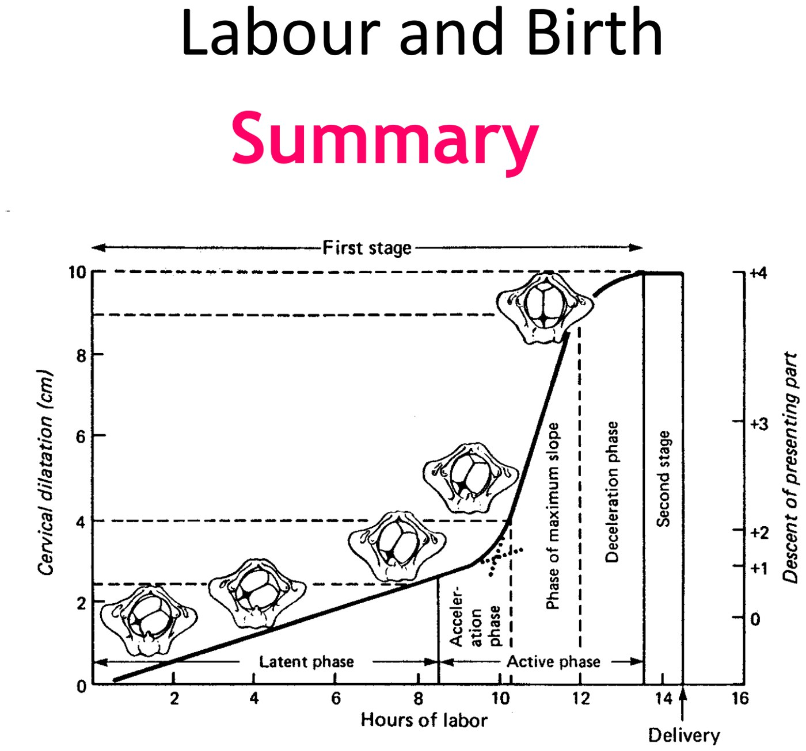
Fetal heart rate monitoring
| Intermittent | Continuous | |
|---|---|---|
| For | Low-risk labour | High risk · oxytocin · VBAC |
| How | Every 15 min in stage 1, every 5 min in stage 2 | External, or a scalp electrode if the trace is poor or may be maternal |
| Note | Low risk: fewer operative births, same outcomes | Classified normal, atypical, abnormal |
| Feature | Normal |
|---|---|
| Baseline | 110–160; > 160 tachycardia, < 110 bradycardia |
| Variability | 6–25 bpm; ≤ 5 for < 40 min can be sleep |
| Accelerations | Present. ≥ 32 wk: > 15 bpm for > 15 s |
| Decelerations | None, or occasional uncomplicated variables or earlies |
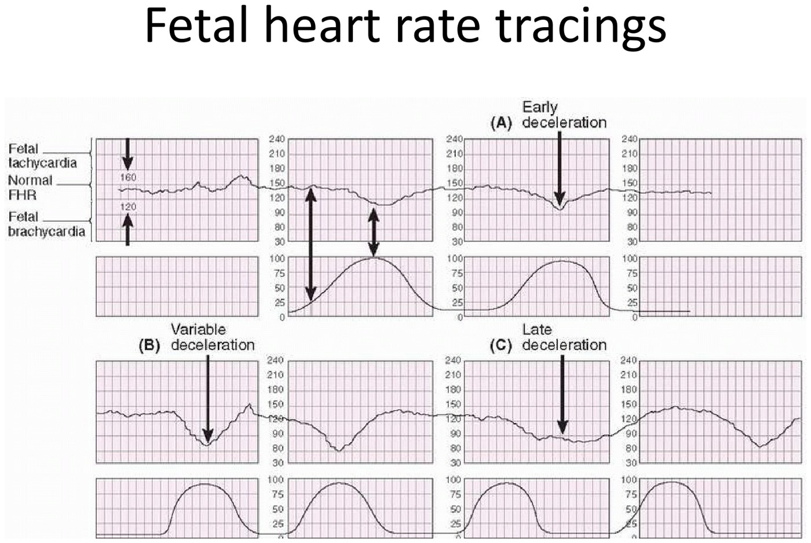
| Deceleration | Cause | Meaning |
|---|---|---|
| Early | Head compression | Benign |
| Variable | Cord compression | Worse if complicated (deep, long) |
| Late | Placental insufficiency | Recurrent lates are concerning |
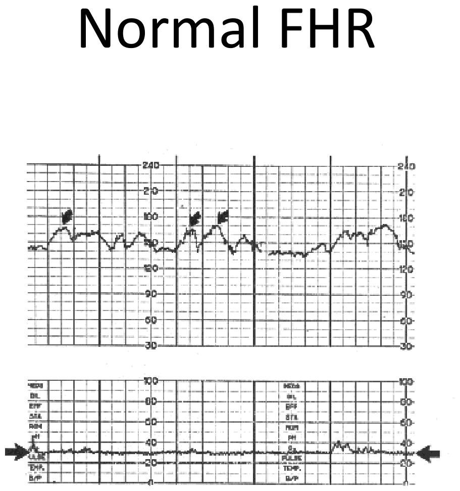
Normal: baseline ~130, good variability, accelerations.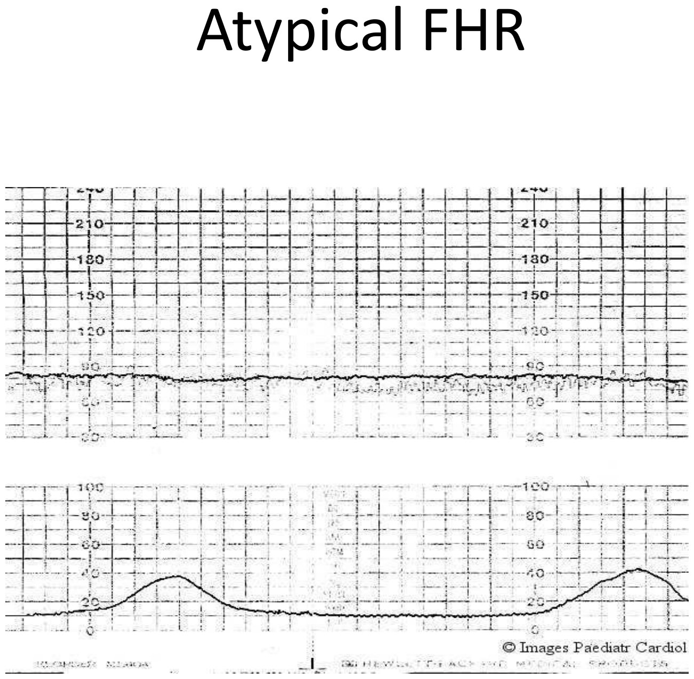
Atypical: minimal variability, no accelerations. Under 40 min, maybe sleep.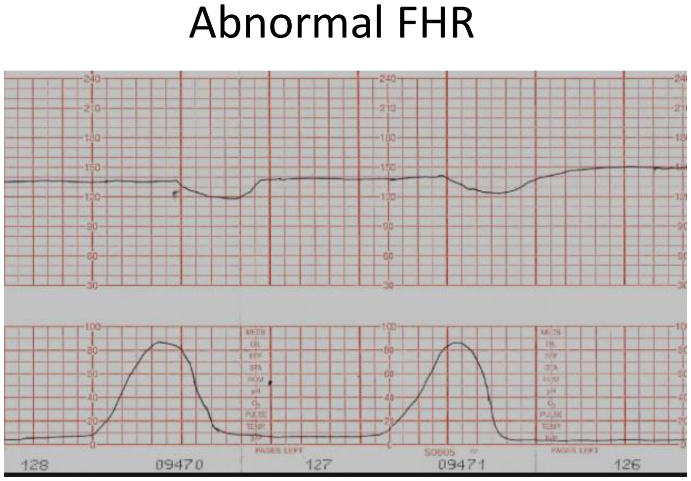
Abnormal: recurrent lates after each contraction. Slides from the lecture.Intrauterine resuscitation (atypical or abnormal tracing)
Make sure you're tracing the fetus, not the mother.
Rule out cord prolapse; check dilatation and station.
Moves the baby off its cord, and the uterus off the vena cava.
Longer gaps between contractions, when the fetus reoxygenates.
More for the placenta to deliver.
Dilatation decides the exit: at 4 cm only a caesarean; fully dilated, push vs operative vaginal birth.
The vaginal exam, lie and presentation
| Finding | Recorded as |
|---|---|
| Dilatation | 0–10 cm |
| Effacement | 0–100% thinning |
| Station | Lowest fetal part vs the ischial spines = 0; above −, below + |
| Position | Where the occiput (vertex), sacrum (breech) or chin (face) points |
| Lie | Longitudinal (99%) or transverse/oblique |
| Presentation | Cephalic (95%) or breech |
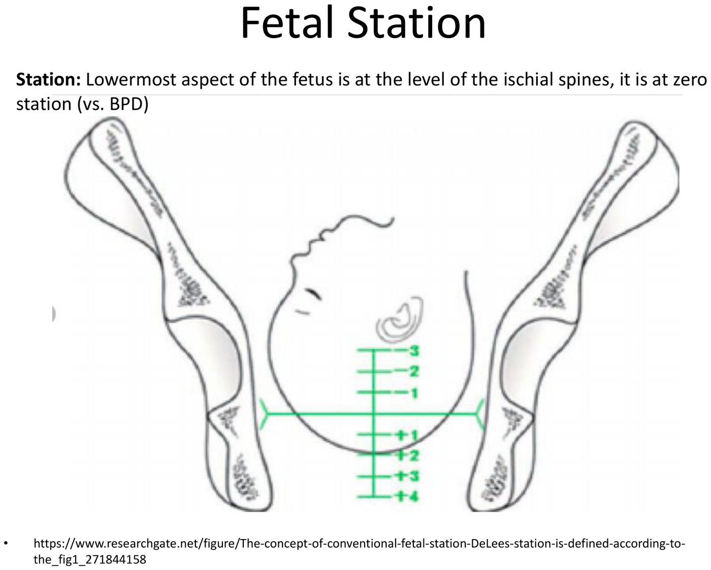
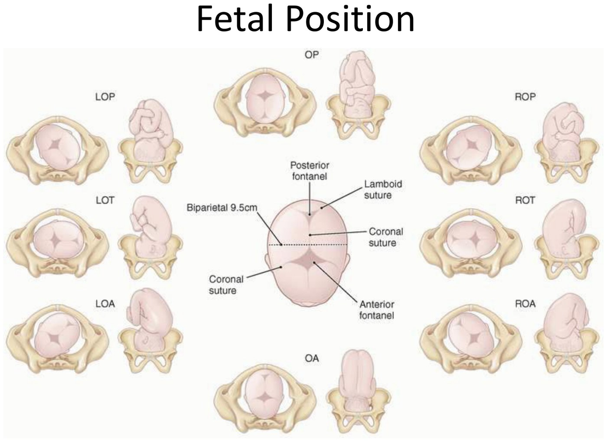
Positions are named by where the occiput points. LOA is commonest. OA gives a well-flexed head; OP presents a wider one and explains many long second stages.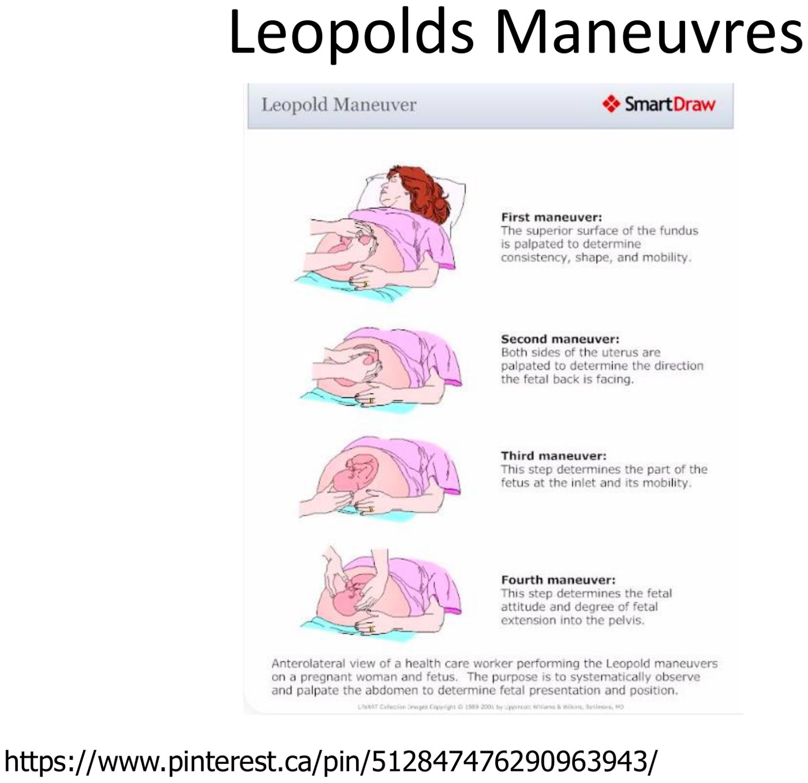
Leopold's: 1 fundus (what's up there?) · 2 sides (where's the back?) · 3 above the pubis (head or breech?) · 4 toward the pelvis (flexion, descent).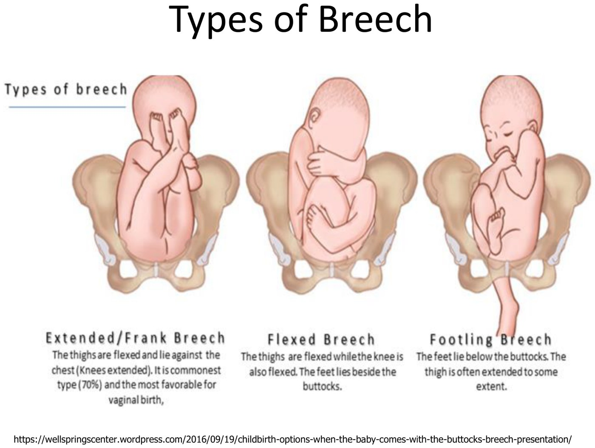
Frank breech is commonest; frank or flexed can deliver vaginally in the right setting, footling can't. Slides from the lecture.Exams: every 2–3 h in early labour; each one raises the risk of chorioamnionitis. Pain: first stage = T10–L1 (cervix, uterus); second stage = S2–S4, pudendal (vagina, perineum). Epidural is the commonest and probably most effective option.
Second stage: the cardinal movements
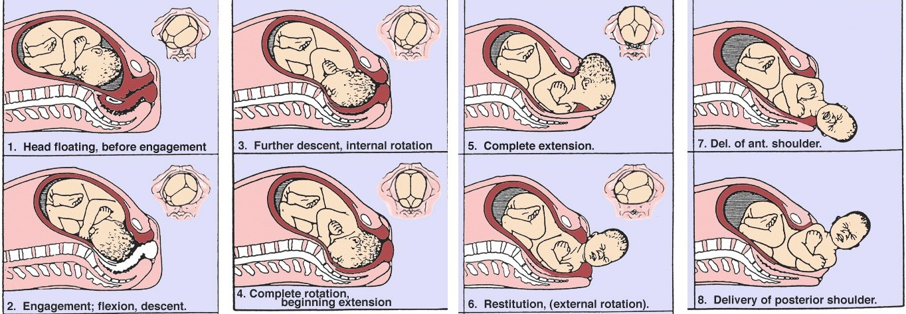
| # | Movement | What happens |
|---|---|---|
| 1 | Engagement | Head drops into the inlet (~2 wk before labour in a primip) |
| 2 | Descent | All through labour |
| 3 | Flexion | Meets resistance, tucks the chin |
| 4 | Internal rotation | Occiput turns anterior, under the pubis |
| 5 | Extension | Head extends out under the symphysis |
| 6 | External rotation | Delivered head turns back to line up with the shoulders |
| 7 | Expulsion | Anterior shoulder, posterior shoulder, body |
Third stage: the placenta
| Active management (WHO / SOGC) |
|---|
| 1. A uterotonic: oxytocin (or ergonovine, misoprostol) |
| 2. Gentle controlled cord traction: too hard can invert the uterus |
| 3. Fundal massage |
| Reduces postpartum hemorrhage |
| Signs of separation, in order |
|---|
| 1. Uterus firm and globular (earliest) |
| 2. A gush of blood |
| 3. The uterus rises |
| 4. The cord lengthens |
Perineal tears and the fourth stage
| Degree | Injury |
|---|---|
| 1st | Vaginal mucosa only |
| 2nd | + perineal muscles; sphincter intact |
| 3rd | Anal sphincter: 3a < 50% of external · 3b > 50% · 3c internal too |
| 4th | Both sphincters + rectal mucosa |
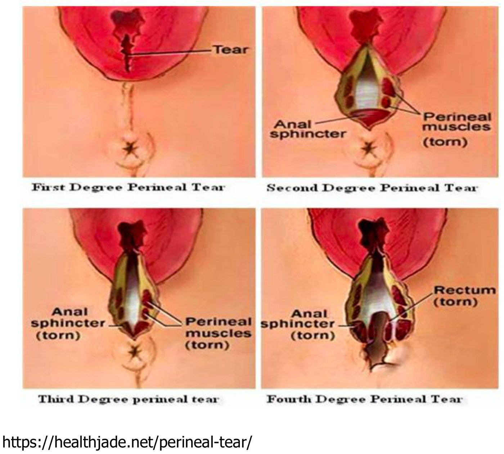
Fourth stage: as the uterus contracts, up to ~500 mL of blood returns to her circulation (autotransfusion), which strains a heart with cardiomyopathy or valve disease. Watch for PPH; the baby starts breathing air and feeding.
Stalled Labour & Operative Birth
Dystocia and the 4 Ps, induction from Bishop score to oxytocin, forceps vs vacuum, caesarean, cord prolapse, and labouring after a caesarean.
- Dystocia = abnormally slow progress: failure to progress (dilatation) or failure to descend. The #1 reason for caesarean. Not shoulder dystocia, which is an emergency.
- 4 Ps: Power (ARM, then oxytocin) · Passage (can't change) · Passenger (ECV, rotation; size can't change → CPD → caesarean) · Psyche (continuous support helps).
- Induction: same contraindications as labour. Bishop < 6 → ripen (prostaglandin or Foley) to ~2 cm → ARM → oxytocin with continuous monitoring. Induce before 42 wk.
- Operative vaginal birth needs full dilatation, an engaged vertex, a known position. #1 indication: an abnormal FHR. A vacuum is not for rotation; forceps can rotate.
- TOLAC: 1–2 prior low transverse caesareans, OR within 30 min, > 18 months, consent. Success 60–80%. Never after a classical or T scar. First sign of rupture = abnormal FHR.
- Cord prolapse: push the presenting part off the cord and keep your hand there until the emergency caesarean delivers the baby.
Dystocia
| Term | What stalls |
|---|---|
| Failure to progress | Dilatation (1st stage): e.g. 7 cm, no change for hours |
| Failure to descend | Descent (2nd stage): fully dilated, head won't come down |

The 4 Ps: fix what can be fixed
| P | Fixable? | How |
|---|---|---|
| Power | Yes | 1. ARM, 2. IV oxytocin. For pushing: oxytocin, coaching, analgesia. |
| Passage (bony pelvis) | No | Permanent |
| Passenger | Partly | Breech: external cephalic version · OP/OT: manual or forceps rotation · size: no → CPD → caesarean |
| Psyche | Yes | Continuous support improves outcomes; pain control as she wishes. Severe pain = high epinephrine = weaker labour. |

Induction
| Induce for | Examples |
|---|---|
| Timing | Post-dates: fetal death risk rises after 42 wk, so induce before |
| Mother | Preeclampsia, diabetes, cardiac or renal disease, cholestasis of pregnancy |
| Fetus | IUGR, oligohydramnios, alloimmunization, demise, twins |
| Membranes | Prelabour rupture (incl. PPROM); abruption |

Contraindications = labour's (previa, vasa previa, cord presentation, transverse lie, classical scar or cavity-entering surgery, active herpes) + invasive cervical cancer. Before starting: dates, lie (a transverse lie can't be induced), EFW if there is one, the cervix, consent. A ripe cervix means a shorter induction and a better chance of vaginal birth. Low-risk nulliparas induced in the 39th week (the ARRIVE trial) had fewer caesareans and hypertensive disorders; the deck's “less stillbirth” wasn't shown.
Prostaglandins (Cervidil insert, removable; Prostin gel, not removable; misoprostol) can start labour. A Foley balloon rarely does and is more predictable; when it falls out she's about 2 cm.
Oxytocin works better once the waters are broken; sometimes ARM alone is enough.
Continuous FHR and contraction monitoring; an IUPC if contractions can't be traced.
Operative vaginal delivery
 Forceps, and two vacuums (hand-held Kiwi, soft cup). Slide from the lecture.
Forceps, and two vacuums (hand-held Kiwi, soft cup). Slide from the lecture.
 Forceps: traction, rotation, flexion, extension. A vacuum essentially only pulls. Slide from the lecture.
Forceps: traction, rotation, flexion, extension. A vacuum essentially only pulls. Slide from the lecture.
| Indications | Absolute contraindications |
|---|---|
| Atypical or abnormal FHR (#1) | Incomplete dilatation |
| Malposition (OT, OP) | Unengaged head |
| Avoid Valsalva (heart, brain disease) | Non-vertex (face, brow) |
| Maternal exhaustion | Clinical CPD |
| Prolonged second stage | Fetal bleeding or bone disorder |
| Vacuum | Forceps | |
|---|---|---|
| Can | Traction. Not rotation (> 45°) | Traction, rotation, flexion, extension |
| Mother | Tears, hematoma | More soft-tissue tears |
| Baby | Cephalohematoma, subgaleal bleed, jaundice, retinal bleeds | Facial lacerations, facial nerve palsy, eye trauma |
Caesarean and cord prolapse
| Top four indications |
|---|
| 1. Dystocia |
| 2. Atypical or abnormal FHR |
| 3. Previous caesarean |
| 4. Malpresentation (breech, transverse) |
| Also: previa, vasa previa, accreta; obstruction; active HSV, HIV |
| Risks of caesarean |
|---|
| Infection (endometritis, wound), cut by antibiotics |
| Hemorrhage; transfusion |
| Bladder: the most commonly injured organ |
| VTE: higher than vaginal birth |
| Next time: more previa and accreta |


| Cord prolapse risk factors |
|---|
| Malpresentation (transverse, unstable lie, footling breech) · polyhydramnios · PPROM · an unengaged head · prematurity · multiples |
Trial of labour after caesarean (TOLAC)
| Offer TOLAC if all | Don't, if any |
|---|---|
| 1–2 prior low transverse caesareans | A classical or inverted-T scar |
| OR within 30 min | Hysterotomy or myomectomy entering the cavity |
| > 18 months since the last one | A previous uterine rupture |
| Adequate pelvis; no contraindication to labour | Any contraindication to labour |
| She consents | She prefers a repeat caesarean |
| VBAC more likely | Less likely |
|---|---|
| Previous vaginal birth or VBAC | Previous caesarean for dystocia |
| Spontaneous labour, favourable cervix | Needs induction or augmentation |
| A non-recurring first reason (breech) | > 40 wk, baby > 4000 g |
| Age < 40 | BMI > 30, hypertension |
| Signs of uterine rupture |
|---|
| 1. Atypical or abnormal FHR: the first sign |
| 2. Contractions stop |
| 3. Loss of the presenting part (the low head is gone) |
| 4. Pain; with an epidural, shoulder-tip pain |
| 5. Bleeding, hematuria |
| 6. Tachycardia, hypotension · 7. fetal parts palpable |
PPH & Hemorrhagic Shock
The definition, the 4 Ts, prevention, the PPH sequence and its drugs; then shock: why young women fool you, the resuscitation and the lethal triad.
- PPH = > 500 mL vaginal, > 1000 mL at caesarean, or any loss causing instability. Early < 24 h; late 24 h–12 wk. Weigh the pads: estimates are poor.
- 4 Ts: Tone (atony, #1) · Tissue · Trauma · Thrombin. Previa counts as tone: little muscle in the lower segment.
- Prevent: treat anemia in pregnancy, spot risk factors, a uterotonic after every birth (oxytocin or carbetocin).
- Treat, all at once: help, ABCs, 2 large-bore IVs, bloods → bimanual exam + massage, empty the bladder → boggy: oxytocin, then ergonovine (not in hypertension) or carboprost (not in asthma), misoprostol; firm: look for trauma or tissue → TXA → escalate.
- Shock: tachycardia first; hypotension is late (BP normal up to ~30% loss). Young, postpartum women compensate. Lethal triad: acidosis, hypothermia (< 35 °C), coagulopathy.
Definition and the 4 Ts
| PPH is | |
|---|---|
| > 500 mL | after a vaginal birth |
| > 1000 mL | at caesarean |
| Any amount | causing cardiovascular instability |
| Early / late | < 24 h / 24 h–12 wk |
| Complications |
|---|
| Maternal death (a top-5 cause worldwide) |
| Iron-deficiency anemia; blood-product exposure |
| Sheehan's syndrome: pituitary infarction → failure to lactate first |
| DIC; organ damage from shock |
| T | Mechanism | Risk factors |
|---|---|---|
| Tone (#1) | Uterus doesn't clamp the placental-bed vessels | Overdistension (multiples, polyhydramnios, macrosomia) · exhaustion (long or precipitous labour, prolonged oxytocin, high parity, GA) · infection (chorioamnionitis) · fibroids, previa |
| Tissue | Something left inside | Retained membranes or placenta (succenturiate lobe, accreta), clots |
| Trauma | Something torn | Lacerations (operative or precipitous birth), hematoma, extension at caesarean, rupture, inversion (excess cord traction) |
| Thrombin | Blood can't clot | vWD, hemophilia, ITP · DIC, HELLP, abruption, demise, sepsis, amniotic fluid embolism · anticoagulants |
Managing an acute PPH
ORDER, all at once: Oxygenate, Restore volume, Drugs, Evaluate the response, Remedy the cause. Call nurses, anesthesia and more help early.
| Drug | Role | Avoid / watch |
|---|---|---|
| Oxytocin | Prophylaxis and first-line treatment | Big rapid IV doses: hypotension |
| Carbetocin | Long-acting oxytocin analogue: prophylaxis | — |
| Ergonovine | Second-line | Hypertension (not in preeclampsia) |
| Carboprost (PGF2α) | Second-line | Asthma (bronchospasm) |
| Misoprostol | Uterotonic; room-temperature stable | Fever, shivering |
| TXA | Antifibrinolytic: clots hold | — |
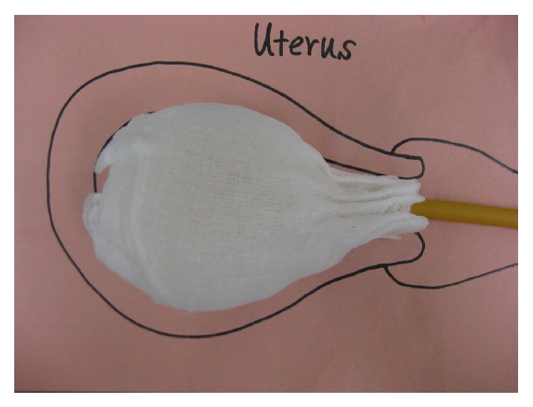
Hemorrhagic shock
| Sign | Why |
|---|---|
| Tachycardia | First compensation |
| Hypotension | Compensation failed: late |
| Oliguria | Kidneys underperfused: the Foley is the score |
| Anxious → confused → lethargic | Brain underperfused |
| Tachypnea; cool, clammy skin | Acidosis; vasoconstriction |
| Metabolic acidosis, high lactate | Anaerobic metabolism |
| Class I | Class II | Class III | Class IV | |
|---|---|---|---|---|
| Blood loss | ≤ 15% | 15–30% | 30–40% | > 40% |
| Pulse | < 100 | 100–120 | 120–140 | > 140 |
| BP | Normal | Normal | Low | Low |
| Pulse pressure | Normal or ↑ | ↓ | ↓ | ↓ |
| Urine (mL/h) | > 30 | 20–30 | 5–15 | Negligible |
| Mind | Slightly anxious | Mildly anxious | Anxious, confused | Confused, lethargic |
The 6.6 recording says the pulse “decreases” as shock worsens; the table shows it rising, and the lecture page follows the table.
| Resuscitation, in ABC order, as a team |
|---|
| ABCs + call for HELP |
| Vitals, blood gas |
| Two large-bore IVs; crystalloid until blood arrives |
| Foley to urometer; O2 by mask |
| CBC, group & screen/crossmatch, INR/PTT, fibrinogen, creatinine |
| Red cells, platelets, cryo, FFP; massive transfusion protocol |
| Find and fix the cause; ICU if pressors are needed |
| Lethal triad | Prevent it |
|---|---|
| Acidosis: clotting enzymes fail in acid | Keep tissues perfused: O2, fluids, red cells |
| Hypothermia < 35 °C | Warmed fluids, forced warm-air blanket, rapid fluid warmer |
| Coagulopathy: mostly dilution | Stop the loss; give the right products, not just crystalloid and red cells |
The Newborn
Transition and resuscitation, the APGAR, the first exam, and the three jobs (pink, warm, sweet), plus jaundice in the first week.
- Resuscitation is ventilation-first. PPV if apneic, gasping or HR < 100; compressions only if HR < 60 after 30 s of good ventilation, at 3 : 1 (adults: compressions first, 30 : 2).
- APGAR at 1, 5 and 10 min, 0–2 each: scored afterwards, it doesn't run the resuscitation. Centrally pink with blue hands and feet scores 1.
- Exam within 24 h: dysmorphism, a patent gut, the heart (no murmur doesn't rule out heart disease), tone (can it feed?), urine and meconium before discharge.
- Warm: four routes of heat loss, and they can't shiver. Dry, wrap, hat; plastic wrap for preterms; incubator under 1500 g.
- Sweet: screen IDM, LGA, SGA, preterm. Target 2.6 mmol/L for 72 h (3.3 after). Symptomatic = IV dextrose.
- Jaundice in the first 24 h is always pathological. Everyone is screened at 24–48 h. Treat with phototherapy; IVIG for immune hemolysis; exchange if very high. Kernicterus is irreversible.
Transition and resuscitation
| Newborn | Adult | |
|---|---|---|
| Usual problem | Breathing | Cardiac |
| First move | Inflate the lungs (PPV if apneic, gasping, HR < 100) | Compressions |
| It's working if | The heart rate rises | — |
| Compressions | HR < 60 after 30 s of good PPV; 3 : 1 | 30 : 2 |
| Temperature | Keep 36.5–37.5 °C | — |
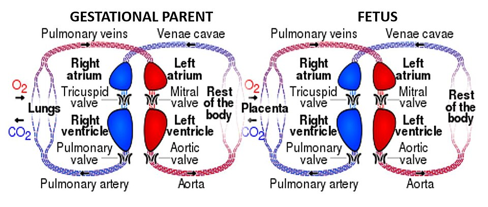
The module's deck doesn't teach transition or resuscitation; the 6.7 page adds them from the 2020 AHA/AAP neonatal guideline, and this is that box.
APGAR and the first exam
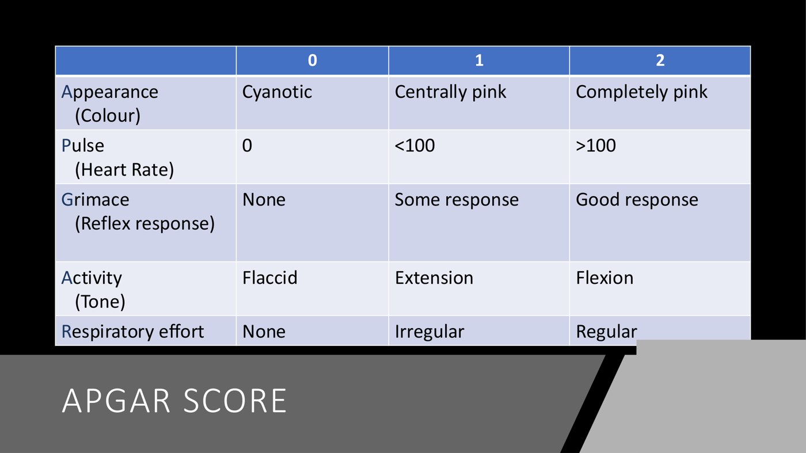
| Newborn exam: look for | Why |
|---|---|
| Dysmorphic features | Genetic syndromes (e.g. Down) |
| A non-patent gut | Distension, trouble swallowing |
| Heart: colour, pulses, murmur | A cyanotic lesion may have no murmur at first |
| Tone | Feeding well is the surrogate |
| Urine and meconium | Before discharge: intake and a patent gut |
| Weight, head, length | Plotted; Ballard score if dates are unsure |
Pink, warm and sweet
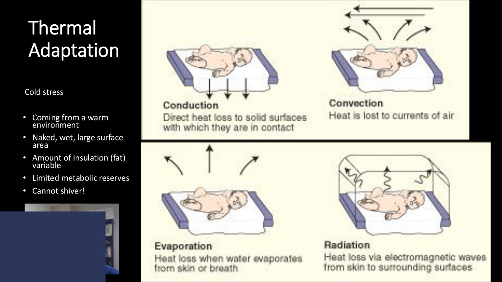
| Why they get cold | What we do |
|---|---|
| Wet, naked, big surface area | Dry at once, wrap, hat |
| Little fat, very little if preterm | Preterm: plastic wrap, a hot room |
| Can't shiver | Incubator < 1500 g; radiant warmer |
| Thin preterm skin | High humidity |
| Too little substrate | Too much use |
|---|---|
| SGA/IUGR, preterm, multiples: little glycogen and fat | Infant of a diabetic mother, LGA: the cord is cut, the extra insulin isn't |
| Glycogen lasts 8–10 h; gluconeogenesis matures over 2–4 days. Cold, sepsis and asphyxia burn glucose too. | |
| Screen (even if well) | Signs |
|---|---|
| IDM · LGA > 90th · SGA < 10th · preterm < 37 wk; 2 h after the first feed | Often none · jittery, irritable · lethargic, poor feeding · can be sepsis |
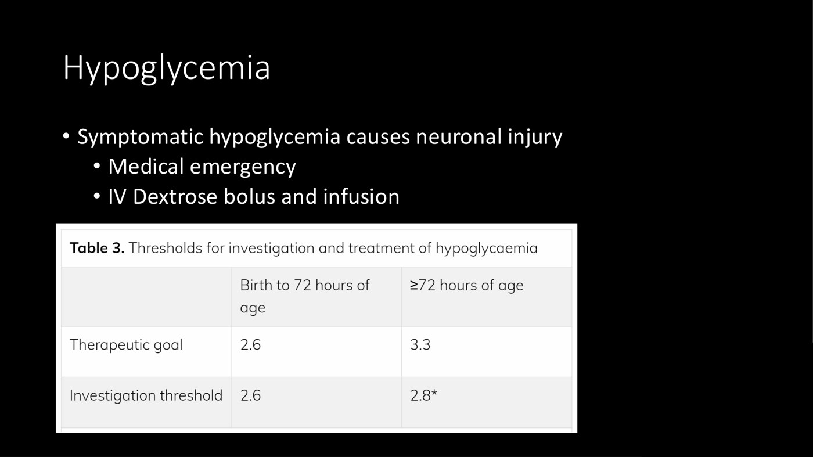
2.6 mmol/L in the first 72 h, 3.3 after. Symptomatic = neurons are being injured. Slide from the lecture (CPS).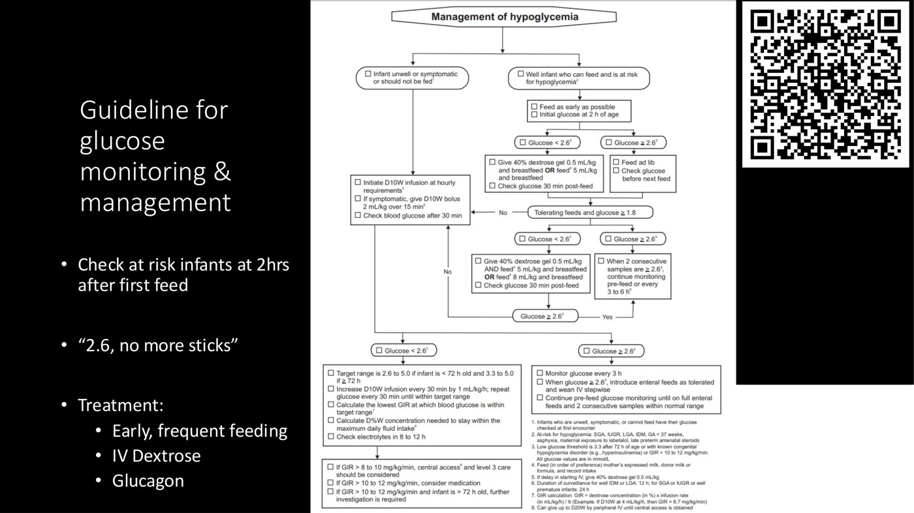
Feed early and often → recheck → IV dextrose. Still low after three checks = IV. Slide from the lecture (CPS).Bilirubin in the first week
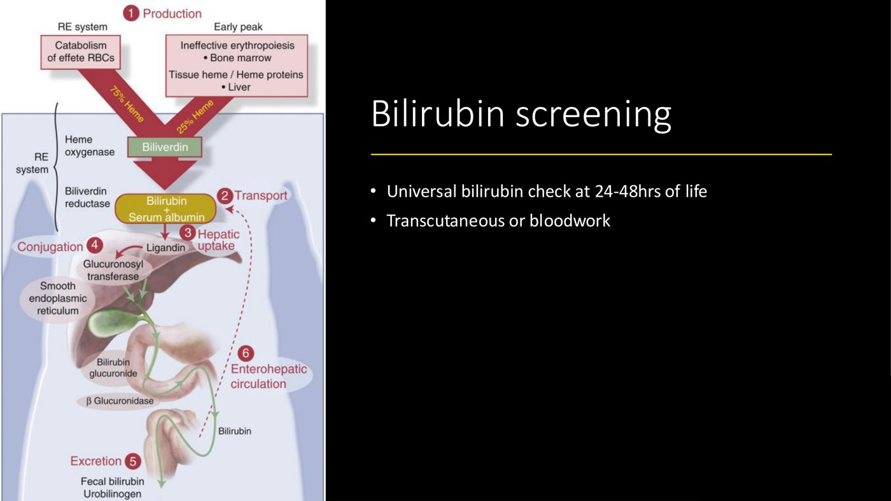
| Red flags |
|---|
| Jaundice in the first 24 h: always pathological |
| Rising fast, or a very high total |
| Direct > 30 µmol/L or > 20% of total: a biliary excretion problem |
| Jaundice > 2 weeks in a term baby · an unwell baby |
| Approach | |
|---|---|
| Screen | Everyone at 24–48 h (skin meter or blood); plot by age in hours on the risk nomogram, then the phototherapy chart (lower lines with risk factors: < 38 wk, low albumin, hemolysis, sepsis, instability) |
| Causes | Breastfeeding jaundice (commonest: milk not in, baby dry) · sepsis · hemolysis (ABO, Rh, G6PD, spherocytosis) · cephalohematoma · polycythemia · drugs that displace bilirubin (ceftriaxone, sulfas) |
| Exam | Blanch the nose; spreads head to toe; colour doesn't predict the level; weight loss > 10% = poor intake |
| Tests | Total and direct bilirubin, DAT, CBC with smear and retics, mother's and baby's groups |
| Treat | Phototherapy · the cause (e.g. sepsis) · IVIG for immune hemolysis · exchange transfusion if very high |
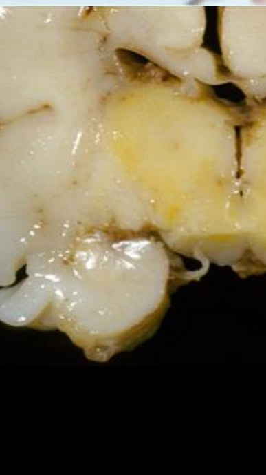
Kernicterus: yellow basal ganglia. Irreversible: cerebral palsy, intellectual disability. Slide from the lecture.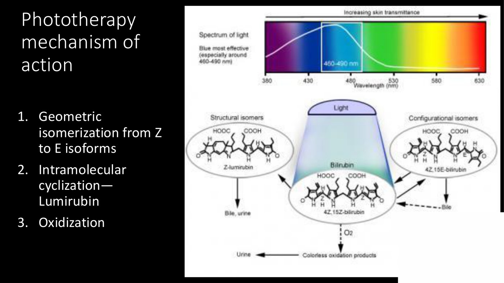
Blue light reshapes bilirubin in the skin (to lumirubin and other isomers), so it's excreted without conjugation. Slide from the lecture.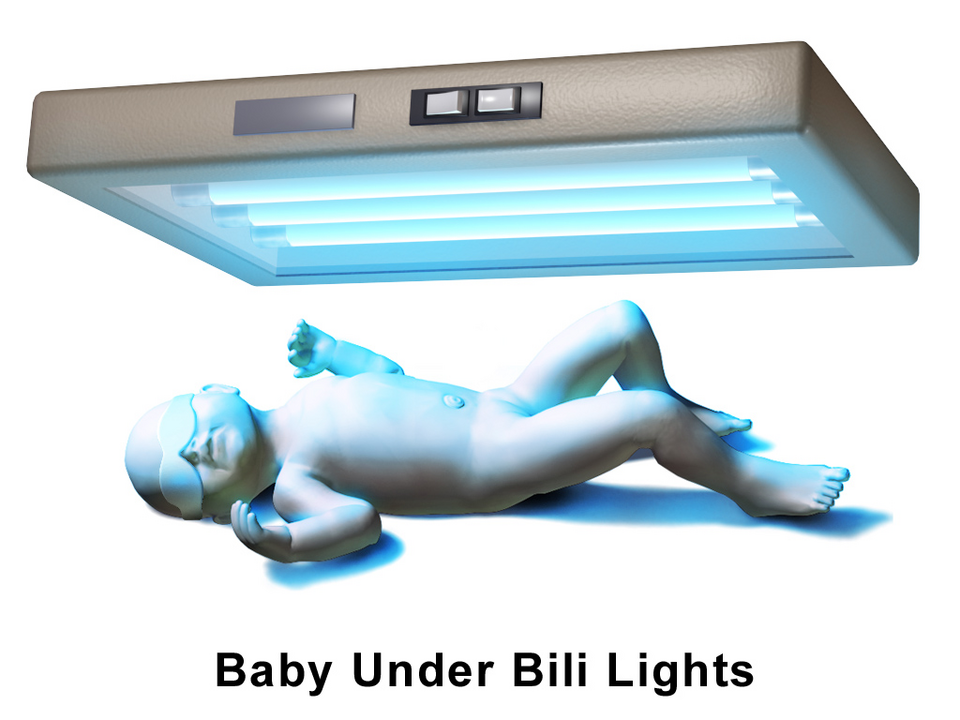
Under the lights: skin exposed, eyes shielded. Illustration by BruceBlaus, CC BY-SA 4.0, via Commons.Globally: about 2.5 million neonates die each year, mostly from preterm complications, intrapartum events and sepsis. Helping Babies Breathe teaches the “Golden Minute” (dry, warm, stimulate, ventilate); breastfeeding and skin-to-skin care for small babies cut deaths too.
Postpartum Care & Lactation
Going home, what goes back when, contraception, mood, fever and clots after discharge; then how milk is made, mastitis, low supply and when not to breastfeed.
- Home at 1–2 days (vaginal) or 2–3 (caesarean). Not with active preeclampsia, PPH, fever or an unstable condition. Before she goes: RhIg (Rh− mother, Rh+ baby) and MMR (not immune).
- Timetable: cervix 1 wk · endometrium 3 wk · uterus 4 wk · placental site 6 wk · lochia rubra → serosa → alba, up to 56 days · blood volume 1 wk.
- Contraception by 6 weeks: ovulation comes before the first period, and lactational amenorrhea isn't reliable. No estrogen before 21 days (VTE), and avoid it while breastfeeding.
- Blues (peak days 2–4, gone by 2 wk) ≠ PPD (within 6 months; suspect if the blues last > 2 wk or are severe) ≠ psychosis (urgent). PHQ-2 or GAD-2 ≥ 3 → EPDS / PHQ-9 / GAD-7.
- Puerperal infection = > 38.0 °C on any 2 of the first 10 days, not counting the first 24 h. Endometritis leads → amoxicillin-clavulanate. VTE peaks postpartum → LMWH.
- Milk = prolactin + oxytocin + removal by day 3. Mastitis: antibiotics and keep feeding; abscess: drain. Stop lactation with cabergoline (a dopamine agonist).
Going home, and what goes back when
| Before discharge |
|---|
| Check bleeding, bowel, bladder and baby care; pain controlled, mobile |
| RhIg if Rh− with an Rh+ baby · MMR if not rubella-immune |
| Contraception advice; follow-up arranged; a safe home |
| Baby: term, AGA, feeding, stable temperature, has voided, metabolic screen at 24 h |
| Not with active preeclampsia, PPH, fever, unstable illness |
| Change | By |
|---|---|
| Cervical canal reforms | 1 wk |
| Endometrium regenerates | 3 wk |
| Uterus back to size | 4 wk |
| Placental site involutes | 6 wk |
| Lochia: rubra (red) → serosa (rust) → alba (white) | Up to 56 days |
| Blood volume normal · diuresis days 2–5 | 1 wk |
| Normal bladder function | 3 months |

| Problem | Advice |
|---|---|
| Tear or episiotomy | Clean and dry: sitz baths, a peri-bottle after every void; infected repairs can open and heal by secondary intention |
| 3rd/4th-degree tear | No rectal medications (suppositories, enemas) |
| Constipation | Fibre, fluids, laxatives (especially on narcotics) |
| Sleep | Feeds, night light, hypoestrogenism: sleep hygiene, CBT, rule out a mood disorder |
| Contraception | By 6 wk; no estrogen < 21 days; progestin-only, IUDs, barriers suit breastfeeding |
Postpartum mood
| Blues | Postpartum depression | Postpartum psychosis | |
|---|---|---|---|
| How common | Up to 85% | 10–20% | 1–4 per 1000 |
| Timing | Peak days 2–4, gone by 2 wk | Within 6 months; blues > 2 wk or severe early | Often with another mood disorder |
| Features | Weepy, labile, irritable, poor sleep | MSIGECAPS; severe: poor bonding, suicidal or homicidal ideation | Can't tell real from unreal; can endanger the baby |
| Manage | Support | Antidepressants, psychotherapy, support | Urgent psychiatry, often admission |
| Risk | — | Prior depression (30% recur), age < 25, poor support, IPV, NICU or stillbirth, unintended pregnancy | Young, primip, bipolar, family history |
 PHQ-2 ≥ 3 → EPDS or PHQ-9.
PHQ-2 ≥ 3 → EPDS or PHQ-9.
 GAD-2 ≥ 3 → GAD-7.
GAD-2 ≥ 3 → GAD-7.
 EPDS, built for the perinatal period. Any yes to item 10 (self-harm) = assess now. Slides from the lecture.
EPDS, built for the perinatal period. Any yes to item 10 (self-harm) = assess now. Slides from the lecture.
Fever, bleeding and clots after discharge
| Problem | Key points |
|---|---|
| Delayed PPH (> 24 h) | Bright red bleeding returns ± fever, tender uterus. DDx: endometritis, retained products, infected tear. Antibiotics; ultrasound; misoprostol or D&C. |
| Puerperal infection | > 38.0 °C on any 2 of the first 10 days, excluding the first 24 h. Commonest complication. Sources: uterus, urine, wound, breast, kidney, veins, chest; necrotizing fasciitis days 3–5. |
| VTE | Highest postpartum; a big share of maternal deaths. LMWH. |
| Endometritis | |
|---|---|
| Risk | Caesarean in labour (highest) > elective caesarean > vaginal; long labour or ROM, many exams, internal monitors, manual placenta removal |
| 1st line | Amoxicillin-clavulanate PO (one drug, twice a day) |
| 2nd | Cephalexin + metronidazole |
| Septic | IV clindamycin + gentamicin |
The 6-week visit: review the birth, feeding, mood (screen for PPD), bladder, bowel, perineum, sex and contraception; vaccines (flu, MMR, tetanus) and the next Pap; pelvic floor physiotherapy for everyone.
How milk is made
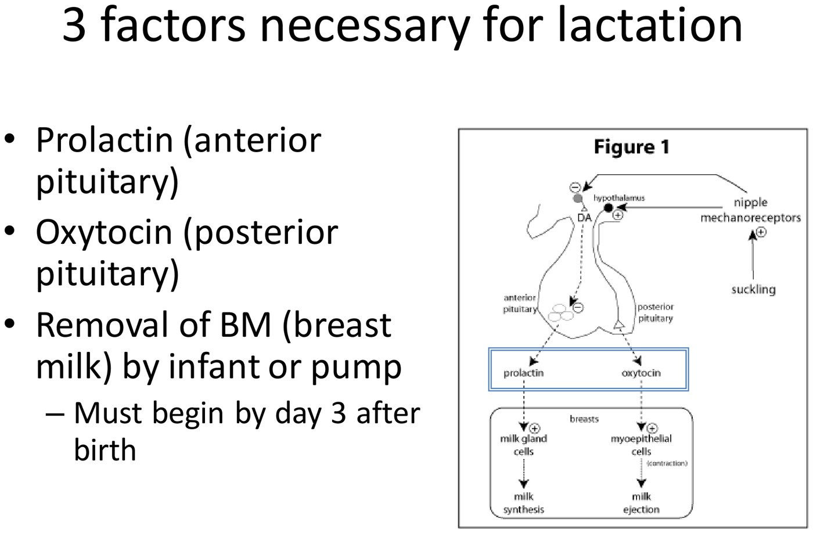
Three factors; removal has to start by day 3.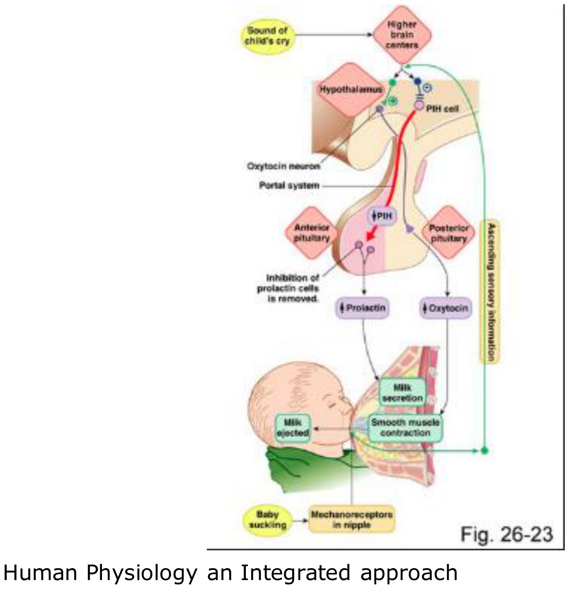
Suckling → hypothalamus: less dopamine → more prolactin (makes milk); oxytocin squeezes it out. A cry alone can trigger oxytocin.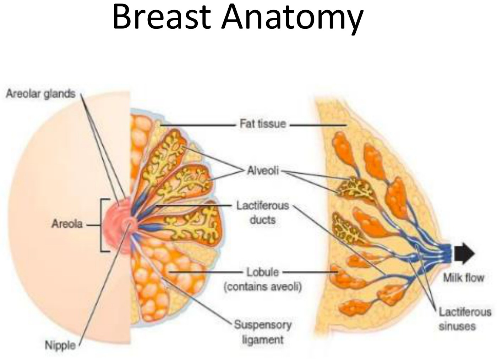
Alveoli (wrapped in myoepithelial cells) → ducts → sinuses → nipple. Estrogen builds ducts, progesterone builds lobules. Slides from the lecture.| Trigger | Change | Effect |
|---|---|---|
| Placenta out | ↓ Progesterone | Prolactin can act: lactogenesis |
| Suckling | ↓ Dopamine | ↑ Prolactin → more milk |
| Suckling | ↑ Oxytocin (posterior) | Let-down; uterus involutes |
| Endocrine at first, autocrine from day 3: supply follows demand | ||
| Milk |
|---|
| Colostrum alone for 2–4 days: antibodies (IgA), cells, vitamins A, D, E, K |
| Transitional milk ~2 wk, then mature milk; milk “comes in” at 3–5 days |
| Exclusive breast milk for 6 months, then with food to 2 years+ |
| Baby: fewer gut, ear, chest and urinary infections, less NEC. Mother: less breast and ovarian cancer, less CVD |
| First feed within an hour, skin-to-skin, on demand; latch on the areola, not the nipple |
When it isn't going well
| Mastitis | Lactational abscess | |
|---|---|---|
| Looks like | A firm, red, tender area, fast onset; fever > 38.5 °C, chills, aches; clinical diagnosis | A tender, fluctuant area, often after mastitis |
| Bug | S. aureus (MRSA possible) | S. aureus |
| Treat | Cephalexin or cloxacillin; keep breastfeeding or pumping; analgesia, cool compresses | Incision and drainage or needle aspiration + antibiotics |
The lecture's photographs of mastitis, abscesses and oral thrush are left out, as on the 6.9 page; the findings are in the table.
| Low supply: poor production | Poor extraction |
|---|---|
| Breast surgery or radiation; PCOS, insulin resistance; retained placenta (progesterone stays high); Sheehan's; drugs: dopamine agonists, decongestants, estrogen | Poor latch, infrequent feeds, cleft lip/palate, prematurity, neuro problems, separation |
| The commonest reason to stop: fewer wet and dirty diapers, too much weight loss. Fix the latch, pump, supplement, review drugs, lactation consultant. | |
| Don't breastfeed with |
|---|
| HIV (in developed countries) |
| Active TB · herpetic lesions on the breast |
| Chemotherapy · active psychosis |
| Infant galactosemia; PKU with a high phenylalanine |
| OK: mastitis (keep feeding), supervised methadone, moderate alcohol (feed first, wait 2 h a drink) |
| Topic | |
|---|---|
| Storage | “Laws of 6”: room 6 h, fridge 6 days, freezer 6 months |
| Formula | Her choice; or low supply with poor growth, dehydration, hypoglycemia |
| Weaning | Gradual; abrupt weaning can worsen mood and cause engorgement and infection |
| Stopping | Cabergoline once; supportive bra, ice, analgesia |
| Avoid | Estrogen contraception and smoking |
Final quiz
48 new questions, mostly clinical vignettes like the progress test. Your results compare each topic with your warm-up.